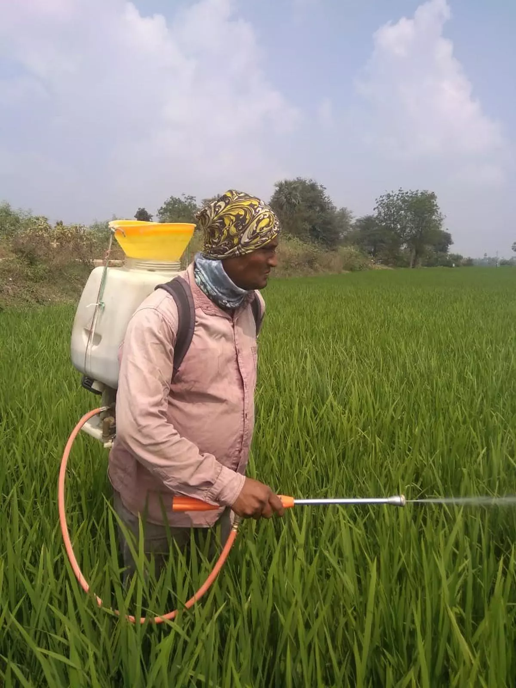
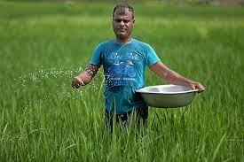
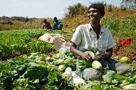

Emerging new trends in crop protection

Farmers must adopt multi-disciplinary approach that combines traditional and innovative techniques
Time is ripe to pay fertilizer subsidies directly to farmers

Such transfers will arm farmers with the choice to cut back on fertilizer use, where possible,
and spend on other essentials such as high-yielding seeds or mechanisation
Agri-Food Processing: Unveiling Potential at WIC

The agriculture sector continues to be the prime pulse of India's economy and driver of the nation's socio-economic development.
In recent years, India has emerged as the net exporter of agricultural products,
with export value amounting to $43 Bn+ in FY 2022-23, registering a ~6% year-on-year increase.